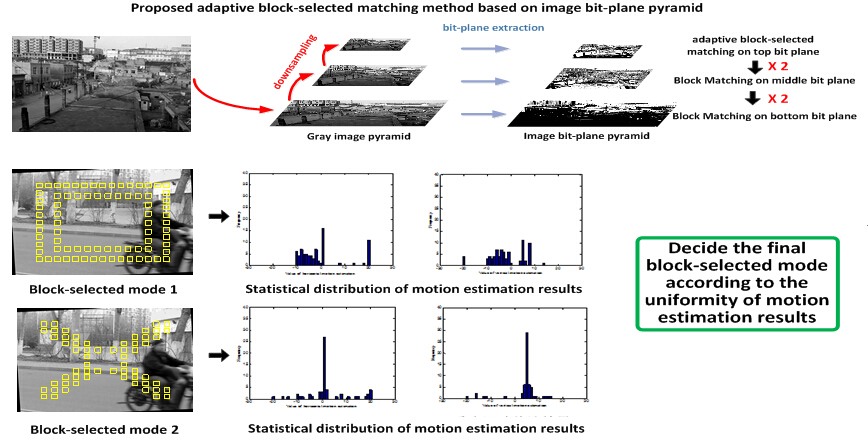

Real-time digital image stabilization (DIS) algorithm
Design a real-time digital image stabilization (DIS) algorithm for mobile phones. Control and Simulation Center at HIT, Undergraduate researcher, Research advisor: Xiaoguang Di, Project designer: Huawei Technologies Co. Ltd. (See video demo in the attachment)
..
Flow Chart

Highlights
- DIS algorithm includes three stages: image motion estimation to estimate the inter-frame translation and rotation motion, motion filtering to calculate the value to be compensated, and image compensation to transform each frame to a smooth frame motion trajectory.
- Image motion estimation is most critical. A new inter-image motion model is proposed, and based this, a novel and fast method is presented to estimate rotation and translation motion between frames using image bit-plane pyramid. Besides, an adaptive block-selected matching mechanism is proposed to deal with the interferences of moving objects. Kalman filtering is employed in the motion filtering stage due to its better real-time performance, compared with Bezier curve filtering and mean filtering method.
- Practical experiments indicates that the proposed DIS algorithm shows great performance when it comes to large-scale vibrations including both translation and rotation, and the average processing speed for 640*480 pixels images reaches 33fps.
- The modified vision of this DIS algorithm for high reliability was also adopted by the Military to be applied on the aircrafts to compensate seeker image dithering caused by air flow disturbances or mechanical vibrations.
- Applied for two national patents and published two papers.
Video Demo
..
© 2015 Curriculum Vitae All Rights Reseverd | Design by Wanxin Jin & Doctor Yang